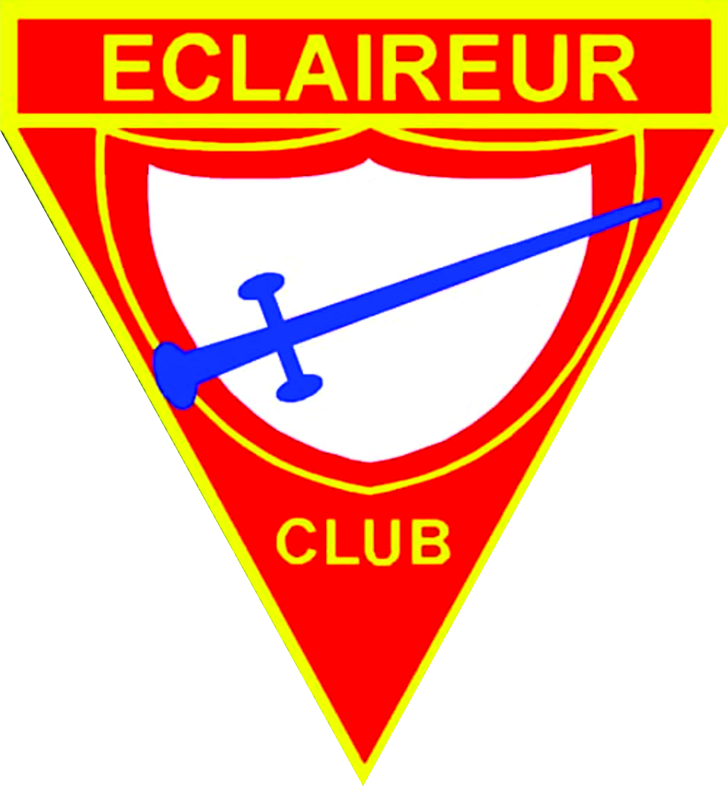

CURRICULUM VITAE
RENSEIGNEMENT PERSONELS
Duckens Pablo
Adresse: Village Rapatrié Haitiens, Port-au-Prince - Haïti
Email: duckenspablo@gmail.com
Tel: (509) 3941 7989
Date de naissance: 20 Mai 2000
Lieu de naissance: Port-au-Prince
Condition matrimoniale: Marié
Savoir Faire
- Bon sens de reponsabilité
- Esprit d'equipe
- Leadership
Formations Academiques
2010 Bac II
Avenue Charles summer Lycée Antenor Firmin
Formations professionnelles
Power Academic: Langage Programation
Connaissance linguistique
Creole, Français et Anglais
